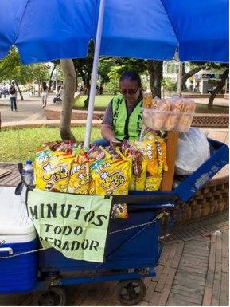
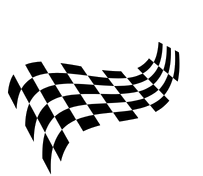
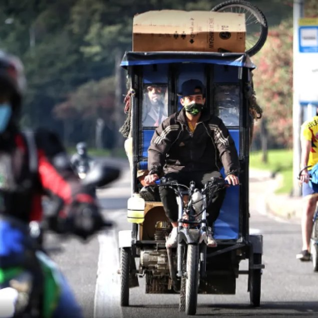

Minutes Sellers

The minute seller is an informal vendor who provides public phone calls to people. They usually work in different places such as corners, restaurants or they have their own shop. Moreover, their working hours are quite flexible because they can work whenever they want. Nevertheless, they used to work at peak hours (6 am to 8am and 5 pm to 7pm). It could be an unusual job for foreigners because they normally have their own cellphones to call everywhere. Besides, it is not a remarkable well-paid job, due to the low cost for a minute in a call. Indeed, most mobile companies have decided to devalue the price for calls, while keeping the high cost of mobile data.
- Category
- Informal vendor
- Location
- Corners, restaurants, or their own shop
- Hours
- Flexible; peak 6-8 am & 5-7 pm
- Pay
- Not well paid (low cost per call)

Moto-Taxis

The MOTO-TAXI is an informal transport job for people who need to move quickly in short distances. You could find these drivers in different places in Colombia, for instance in the Caribbean region and some specific places in cities like Bogotá. If you want to take a ride, they are usually located close to the transmilenio stations, from 6 am to 8 pm. This job would be odd for foreigners because in the USA these kinds of bikes are meant for going around the city. Talking about their salary, it depends on how many rides they do every day, taking into account that each ride may cost around 1500 to 3000 Colombian pesos. It is said this is not well paid.
- Category
- Informal transport
- Location
- Caribbean region & Bogotá, near transmilenio stations
- Hours
- 6 am-8 pm
- Pay
- ~1,500-3,000 COP/ride; not well paid